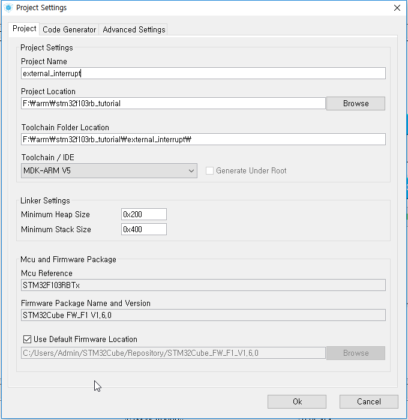
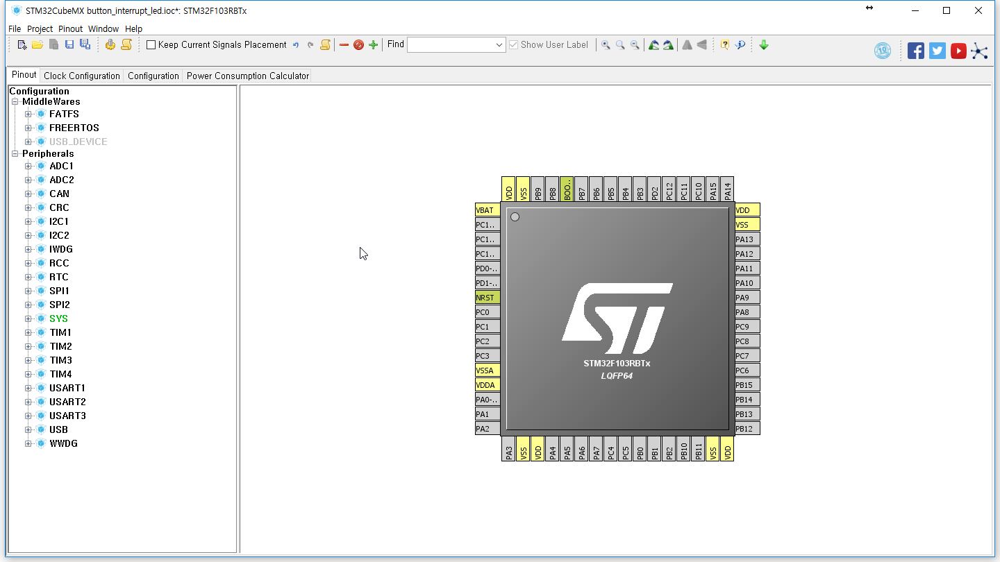
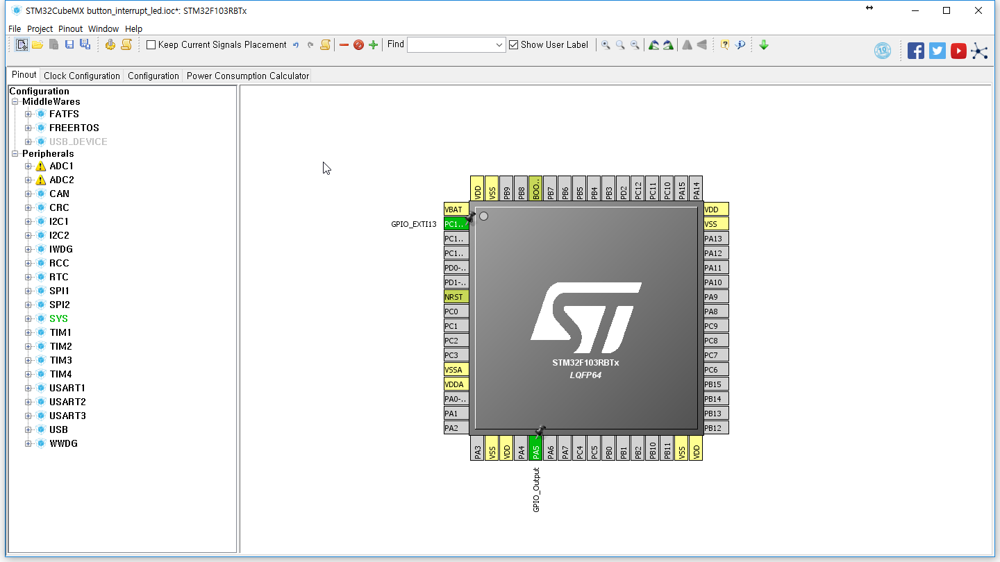
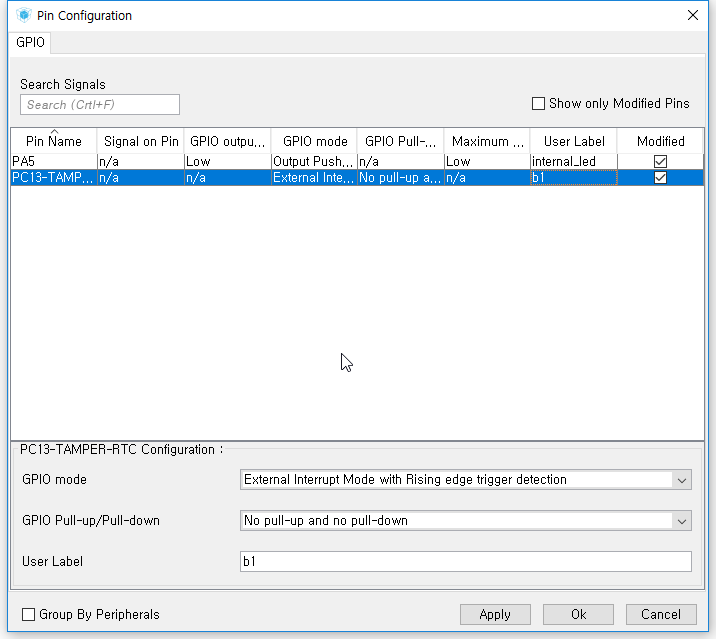
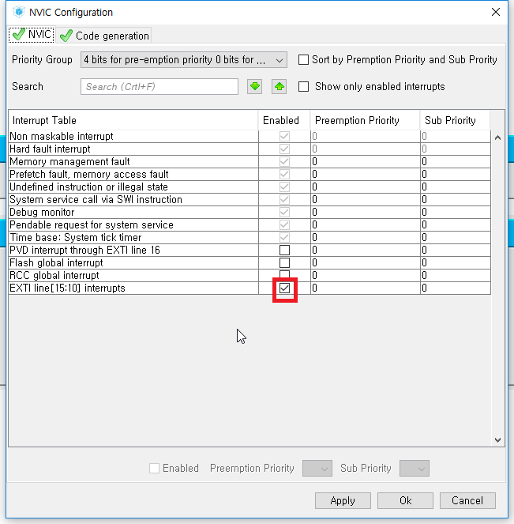

외부 인터럽트 - External Interrupt
external Interrupt 기능은 외부 입력으로 작동되는 인터럽트입니다.
비상정지 같은 즉각적인 응답을 해야 할 때 주로 사용됩니다.
STM32Cube
지난 시간의 파일에서 File - Save Project As를 눌러 다른 프로그램으로 저장을 해줍니다.

Pinout - Clear Pinouts를 눌러 핀 설정을 초기화해줍니다.

PA5에는 GPIO_Output을, PC13에는 GPIO_EXTI13을 선택해 줍니다.

Clock은 저번 시간에 설정했으므로 넘어가겠습니다.
Configuration으로 이동하여 GPIO를 클릭해 줍니다.
늘 그렇듯 User Label을 적어줍니다.

NVIC를 클릭하여 EXTI line ~~의 Enabled에 체크해 줍니다.

이제 톱니바퀴를 눌러 코드를 생성해 줍니다.
uVision5
외부 인터럽트는 main.c에서 별도로 해줄 것이 없습니다.
만일 콜백 함수(Callback Function)를 이용하게 되면 main에서 작업을 해주어야 합니다.
이번 시간에는 stm32f1xx_it.c에서만 작업해 주도록 하겠습니다.
stm32f1xx_it.c로 가면 아래와 같은 함수가 있습니다.
void EXTI15_10_IRQHandler(void)
이 안에 LED toggle 기능을 넣어보도록 하겠습니다.
/* USER CODE BEGIN EXTI15_10_IRQn 1 */
HAL_GPIO_TogglePin(internal_led_GPIO_Port, internal_led_Pin) ;
/* USER CODE END EXTI15_10_IRQn 1 */
여기까지 완료되었다면 F7(Build) - F8(Download)를 눌러 다운해 줍니다.
보드의 파란색 버튼(B1)을 누를 때마다 led의 on/off가 바뀌는지 확인합니다.